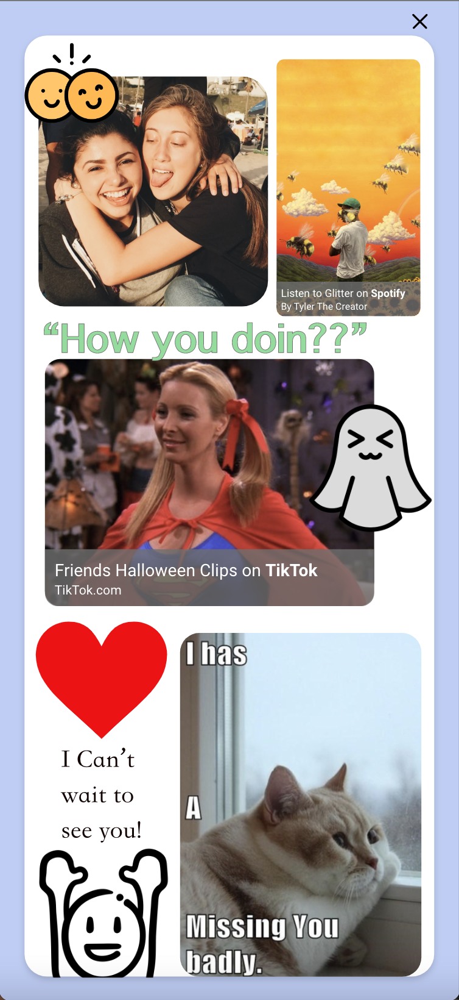
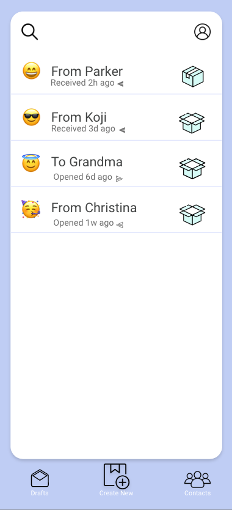
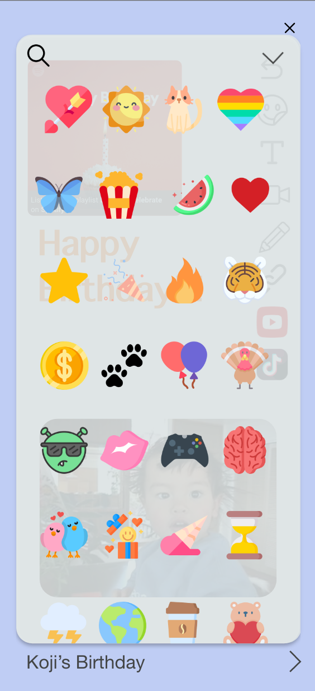
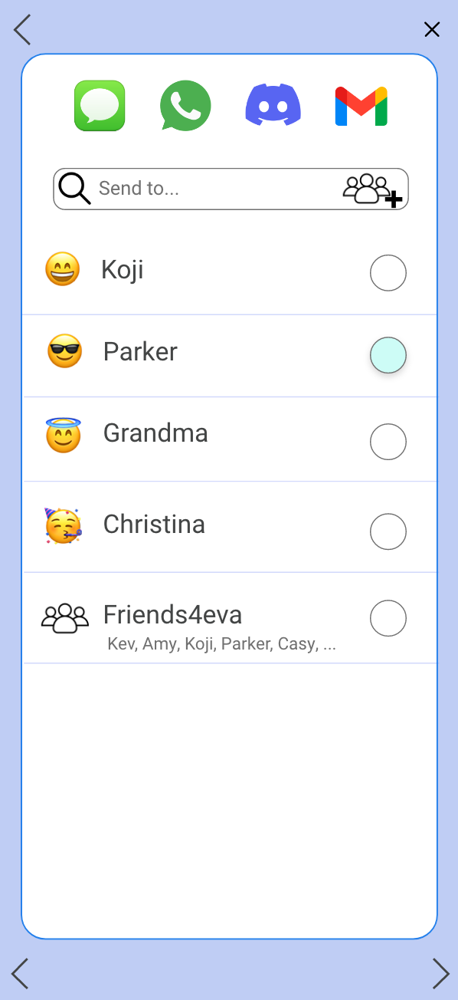

CarePack
CarePack is a mobile app that allows users to create personalized virtual care packages for their friends and loved ones. With CarePack, users can include a variety of multimedia elements such as photos, videos, links, stickers, and drawings to create unique and thoughtful packages. Our app also allows users to customize the outside of the package and include a personal message for the recipient to read before opening. Our design aims to foster more meaningful and substantive communication between users and their long-distance friends. As a member of the team, my responsibilities included UI/UX design and research.
Check out a example user flow on Youtube!